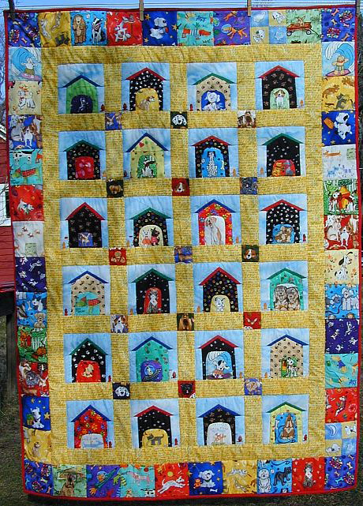

Up Next-->

Daphne's quilt
Daphne's quilt was great fun to make and when I am asked where I got all those dog fabrics people are surprised and laugh at my reply. Many came from a shop called The Quilted Cat on route 22 in Maiden Creek, Pa. Each dog house is a paw print fabric which came from my ever helpful problem solving friend Cappy. Dogs are always jumping up and so get paw prints on their houses, don't they? Some of the dogs are realistic and some are fun like surfer dog and space dog. The yellow sashing has all kinds of dog talk like fetch and woof and bow wow.